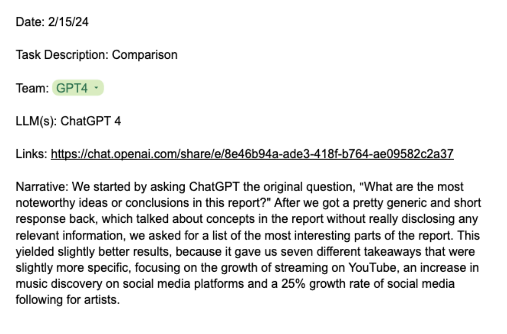
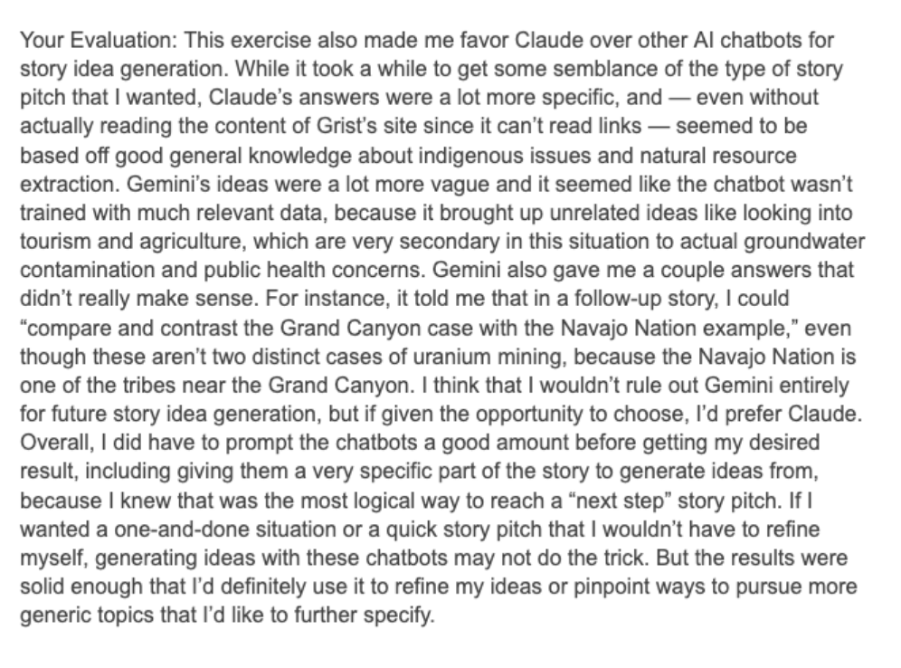

I called it my “running with scissors” class, because after I offered to teach a course on using artificial intelligence for journalism, the thought dawned on me that I had very little idea how to actually design and teach such a class.

Here’s what I eventually settled on: give students access to various AI services - ChatGPT, Claude, Gemini and other LLMs - and then ask them to apply them to specific journalism-related tasks. These tasks included some of the most fundamental journalism processes, including:
- coming up with story ideas
- trying to figure out what kinds of people to talk to
- finding key ideas in a document or report
- editing text
- generating headlines or social media copy
The list of tasks also touched on some jobs that LLMs are pretty good at: extracting structured data from unstructured text, converting one story format to another and describing the elements of an image or video.
For each task, I gave students a template for documenting their work. For example, one task was uploading a document to an LLM and asking it to summarize it in a way that would be useful for finding a story. We had team and individual exercises, but they used the same basic template, and as the semester went on I asked them to use multiple large language models in their tasks. They needed to describe their process in doing so. Here’s an example of a template:

The key part - the part that was worth the most - was asking them to evaluate the results and reflect on how useful this process was. This got them thinking about their expectations versus the reality of generated text and images, so that they could compare the two. Students may not be experts on how AI works, but they are smart enough to judge output compared to expectations and will learn from their processes. Early on, I also had some students do the same task without any computer technology at all - Team Luddite. Here’s one of the evaluations from a task on generating follow-up story ideas from an existing story:

These evaluations were key to students gaining an understanding of what LLMs can do (and what they should not be used for). Repeated conversations with LLMs help them to ask better questions, which is kind of the whole point of doing journalism in the first place. Chat interfaces seem “neutral” but the back and forth of the conversation reveals some habits, and knowing those is critical for both asking the right questions and understanding the responses.
Most of the students started out with either a degree of enthusiasm about the abilities of LLMs or a pretty skeptical take on their usefulness. Many of them assumed that the confidence displayed by LLMs in their responses was justified. They all learned to be less deferential in their prompts, which is what I wanted.
The journalism implications of some of these tasks were pretty profound. For example, one assignment had students ask LLMs to examine images and describe their details. Without getting all “Columbo” here, looking for telling items in images is a pretty arduous manual task for humans, and not all of us are very good at it. Accurate assistance for tasks like this at scale would make a lot of things possible for newsrooms, especially smaller newsrooms.
The running with scissors theme was the right one: I repeatedly had to change or add things. One week we used AI to describe the visual elements of videos, noting that doing that meant stripping out any audio. When we met two days later, the tool we used (Google’s Gemini) had changed so that it retained the audio and you could ask questions of it. More than any other class, this one demanded that I keep up because new things are happening all the time, and in particular LLMs are getting new capabilities. When I teach it again next spring, my scissors will likely be a different size (and maybe shape), but there will be a lot of unknowns again.
The major assignments for this class were two guides based on their evaluations: each student picked an existing news organization and wrote a guide describing three ways that organization might use AI in a responsible manner. The second guide, a group project, is a deep dive on a specific task like editing for style or summarizing PDFs. I’ll share more takeaways from those projects in future posts.